Layout experiment 1.a: before and after session 2.b
Before = the board session 2 ended with (commit b22752f, 46 × 65 mm). After = the board now (commit 03b2adb, md5 3a4dbf32…, 49 × 68 mm). Same renderer for both (tools/render_layers.py), same review regions (in each board's own frame). Generated by tools/before_after.py from tools/ba_data.py and tools/summary.py.
The short version
The board grew and the ADIN moved to the middle. 138 footprints before, 138 after; 79 changed position, rotation or side (the whole ADIN block, both transformer clusters, the 1.8 V buck, the port-1 side with L1, the inserts, the jumpers, the fiducials and the south band). The frame's origin (the Pi's north-west corner) is the same in both.
| Measure | Before (b22752f) | After (03b2adb) | |
|---|---|---|---|
| Board | 46 × 65 | 49 × 68 | 3 mm wider (west), 3 mm taller (south) |
| SPI copper, new track mm (SCK / MOSI / MISO / ~CS) | — / — / 66.5 / 67.6 (west-edge detour) | ADIN_SCK 31.3, ADIN_MOSI 32.2, ADIN_MISO 37.5, ~{ADIN_CS} 39.1 | straight from U1 to J1 on Internal 2, routed first |
| Pairs (mm; limits 9.5 / 9.5 / 21.3 / 21.3) | 9.46 / 8.80 / 17.98 / 18.62 | 9.39 / 8.77 / 20.19 / 20.87 | all within |
| Segments per pair leg (the staircases, QE N3) | 25 / 40 per leg (staircases) | 15 / 15 / 24 / 24 | 45° runs as single segments |
| Open links besides J1's no-connect pair | 0 | 0 | |
| DRC | 111 errors (all Sofar's), 254 warnings, 1 unconnected | 109 errors (109 with a reason, 0 without), 68 warnings, 1 unconnected | |
| Rules: below class / thin links / clearance items | 0 / 0 / 0 | 0 / 0 / 0 | |
| JLCPCB DFM table | 22 pass / 9 fail (DFM.md History) | 30 pass / 1 fail (smd_pad) | |
| Vias in all | 277 | 265 |
Copper per layer
| Layer | Before: segments / mm | After: segments / mm |
|---|---|---|
| Top Layer | 444 / 301.2 | 381 / 321.3 |
| Internal 1 | 311 / 183.8 | 134 / 194.0 |
| Internal 2 | 862 / 442.9 | 186 / 431.5 |
| 6 Bottom Layer | 521 / 260.4 | 504 / 268.1 |
| vias | 277 | 265 |
| filled zones | 15 | 15 |
Nets whose copper changed by 2 mm or more, or whose via count changed
| Net | Before mm | After mm | Vias | Layers before → after |
|---|---|---|---|---|
| 1V8 | 36.7 | 34.8 | 4 → 3 | Bottom, Internal 1, Internal 2 → Bottom, Internal 1, Internal 2 |
| 3V3 | 111.4 | 113.9 | 21 → 16 | Bottom, Internal 1, Internal 2, Top → Bottom, Internal 1, Internal 2, Top |
| 5V_PI | 9.1 | 22.2 | 5 → 8 | Bottom, Internal 1, Top → Bottom, Internal 1, Top |
| ADIN_LED_VDD | 6.6 | 5.6 | 0 → 2 | Bottom → Bottom, Top |
| ADIN_MISO | 65.5 | 38.7 | 1 → 3 | Internal 1, Internal 2, Top → Internal 1, Internal 2, Top |
| ADIN_MOSI | 32.9 | 33.0 | 2 → 1 | Internal 1, Internal 2, Top → Internal 1, Internal 2, Top |
| ADIN_PWR | 42.6 | 42.3 | 10 → 12 | Bottom, Internal 1, Internal 2 → Bottom, Internal 1, Internal 2 |
| ADIN_SCK | 32.2 | 32.2 | 3 → 1 | Internal 1, Internal 2, Top → Internal 1, Internal 2, Top |
| ADIN_VDDIO | 47.4 | 50.9 | 10 → 6 | Bottom, Internal 1, Internal 2, Top → Bottom, Internal 1, Internal 2, Top |
| BM1_N | 57.6 | 65.5 | 12 → 12 | Bottom, Internal 1, Internal 2, Top → Bottom, Internal 1, Internal 2, Top |
| BM1_P | 42.8 | 49.5 | 11 → 10 | Bottom, Internal 1, Internal 2, Top → Bottom, Internal 1, Internal 2, Top |
| BM2_DATA_N | 18.2 | 20.9 | 2 → 2 | Internal 1, Top → Internal 1, Top |
| BM2_DATA_P | 17.5 | 20.1 | 2 → 2 | Internal 1, Top → Internal 1, Top |
| BM2_N | 38.1 | 46.7 | 12 → 10 | Bottom, Internal 1, Top → Bottom, Internal 1, Top |
| BM2_P | 51.0 | 59.5 | 12 → 12 | Bottom, Internal 1, Internal 2, Top → Bottom, Internal 1, Internal 2, Top |
| GND | 53.8 | 57.7 | 71 → 71 | Bottom, Top → Bottom, Top |
| Net-(U4-ALERT) | 5.2 | 8.4 | 2 → 2 | Bottom, Internal 1 → Bottom, Internal 1, Internal 2 |
| PAYLOAD_EN | 15.6 | 17.9 | 1 → 1 | Bottom, Top → Bottom, Top |
| PI_5V | 2.3 | 11.2 | 0 → 1 | Top → Internal 2, Top |
| VBUS | 28.5 | 31.0 | 18 → 18 | Bottom, Top → Bottom, Top |
| VBUS_OUT | 23.1 | 23.1 | 9 → 7 | Bottom, Internal 2, Top → Bottom, Internal 2, Top |
| ~{ADIN_CS} | 65.2 | 40.3 | 6 → 2 | Internal 1, Internal 2, Top → Internal 1, Internal 2, Top |
| ~{ADIN_INT} | 39.7 | 42.4 | 1 → 2 | Bottom, Internal 2, Top → Bottom, Internal 2, Top |
| ~{ADIN_P1_LED1} | 33.4 | 37.8 | 4 → 3 | Bottom, Internal 1, Internal 2, Top → Bottom, Internal 1, Internal 2, Top |
Whole board, layer by layer
Left before (46 × 65), right after (49 × 68); each in its own frame. Colours: magenta data pairs, green bus, red VBUS, blue 3V3, purple rails, yellow 5 V to the Pi, dark signals, grey GND fills.
Top


Internal 1


GND plane (In2)


Internal 2 (In3)


PWR plane (In4)


Bottom


The review regions, before and after
The regions are those of the design review (the new placement); on the 'before' board the same rectangle shows whatever sat there.
port1 pair x -3.5…10.5, y 25.5…32.5 mm
Port-1 data pair: U1 pins 27/28 (north edge of U1 at rot 90) to T1 pads 1/2 in the band; the mote's U1 and T1 sit elsewhere, so the mote view shows only the ADIN block's copper placed as here


port2 pair x -4.0…14.0, y 34.0…41.5 mm
Port-2 data pair: U1 pins 4/5 (south edge) through the pocket's south exit to T2 pads 1/2


spi lane x -7.5…29.5, y 27.0…38.5 mm
The SPI lane: from Sofar's vias at U1's west side east on Internal 2 under U1 and across the band to J1 pins 19-24, routed first (session 2: 25 mm down the west edge past the inserts)
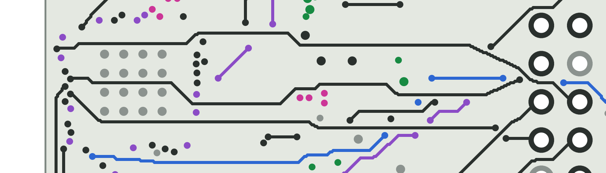
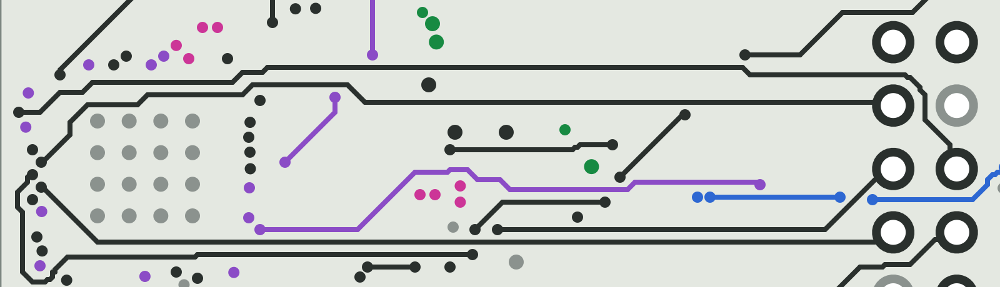
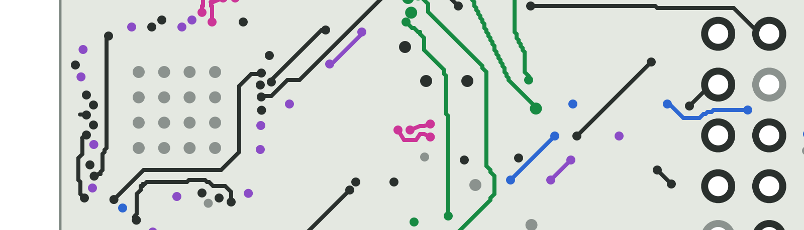
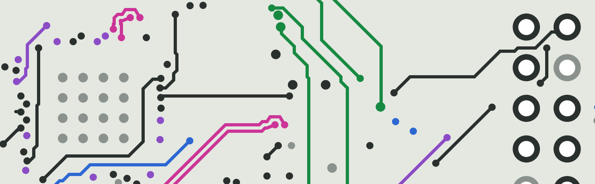
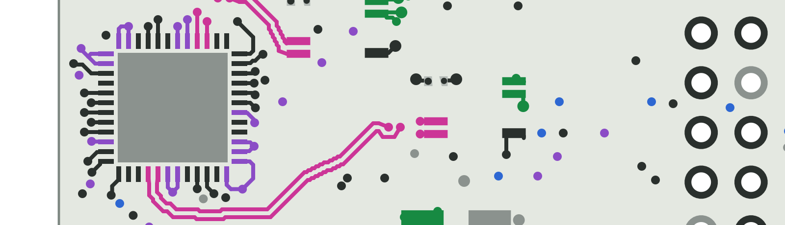
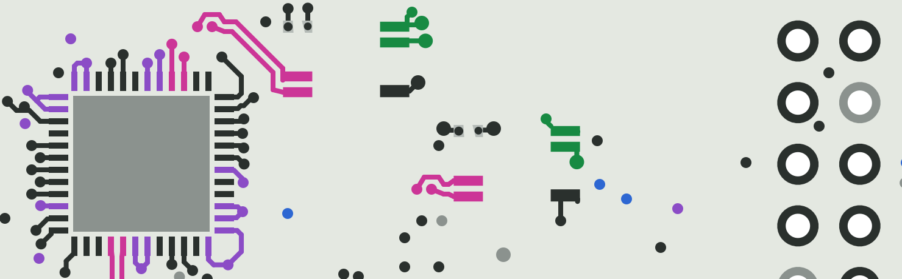
int fanout x -8.5…-2.5, y 29.0…34.5 mm
~{ADIN_INT} fan-out west of U1: U1.39 -> Sofar's own via (2.8 mm inside the edge now that U1 is 3 mm east: no hand via) -> R1.1


u2 u3 pocket exit x -7.0…6.0, y 36.0…42.0 mm
The pocket's south exit: U2 / U3 (1.8 V and 3.3 V switches, bottom) with their fan-out vias, the port-2 pair above, 3V3 / 1V8 / ADIN_PWR leaving east; 3 mm taller than session 2


t1 cluster x 2.5…12.0, y 24.5…32.5 mm
T1 cluster (P1T block) and the bus legs to L1


t2 cluster x 9.0…18.5, y 30.0…38.0 mm
T2 cluster (P2T block) east of T1


north band x 4.5…24.5, y -0.5…8.0 mm
North band: the LEDs D10 / D8 / D9 on the edge, JP1 (5 V to the Pi) and JP2 (LED supply) on top beside them, FID3 / FID4; the LED resistors and FID1 / FID2 underneath
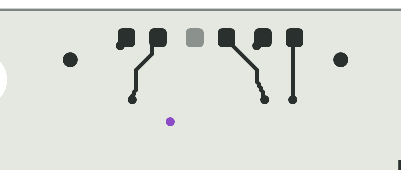
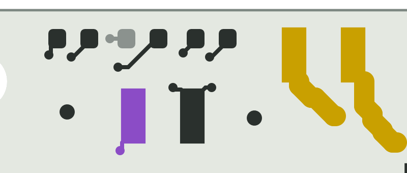
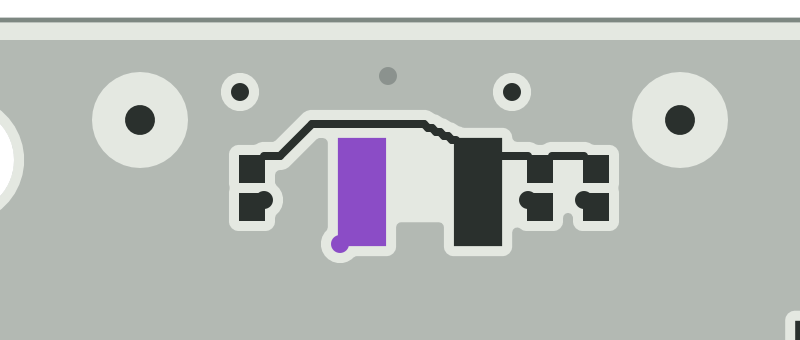
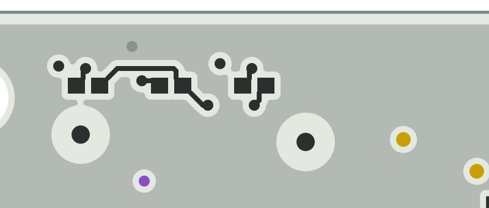
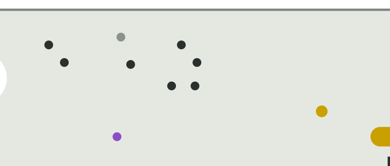
u11 payload x 27.0…38.5, y 49.0…62.0 mm
Load switch U11 at the strip's south end: VBUS in (pre-stitched via), VBUS_OUT to J5 (0.6 mm), its signals to J1


pi5v strip north x 23.5…38.5, y 0.0…25.0 mm
5 V cell at the strip's north end and the 5 V path: L6 -> JP1 in the north band -> J1 pins 2/4 across J1's north end


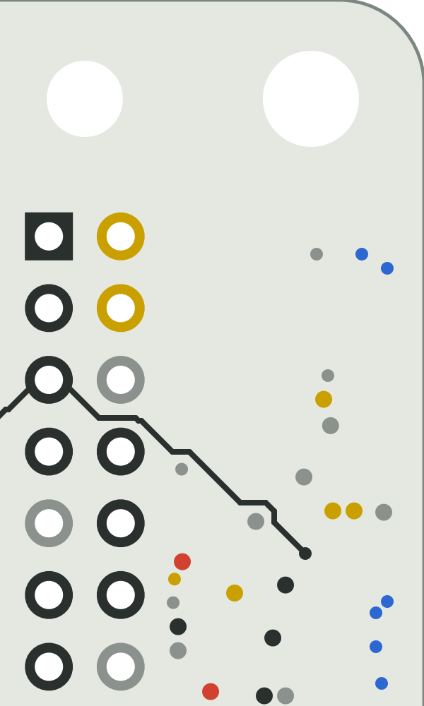
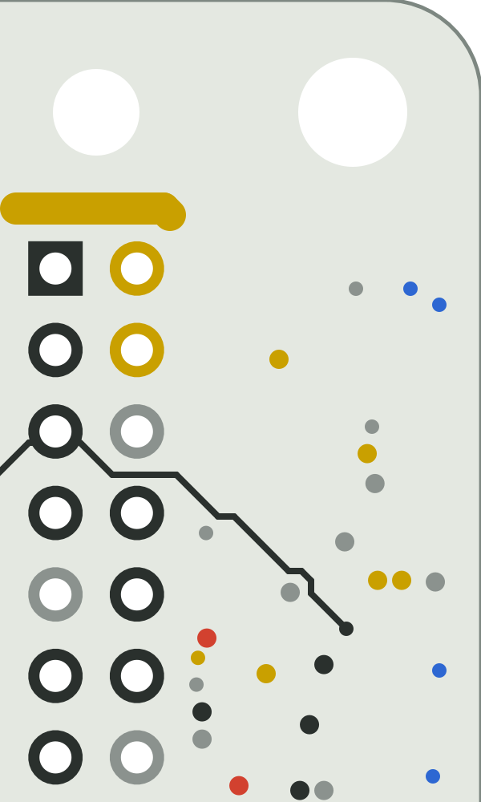


insert mp1 x -10.5…12.0, y 39.0…60.0 mm
Port-1 inductor L1 (3 mm south) with the insert rings MP1 / MP2 (1.5 mm nearer the wall, 2.5 mm south) and the bus feeds; the P1L block's copper